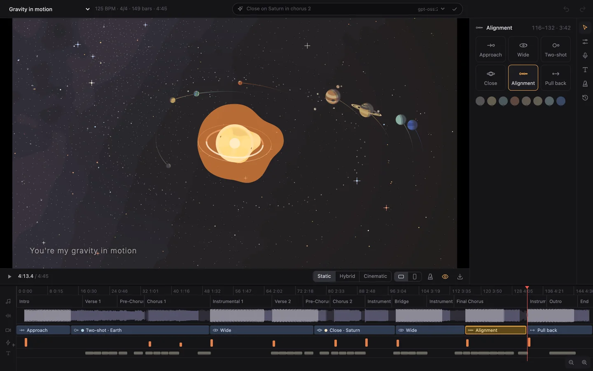

A music video
for any song.
Give it a track. It listens to the whole song, then draws it as a solar system.
First, it listens.
Then everything moves.
The kick swells the Sun. The planets follow its pull.
Three cameras.
One song.
Then direct it
yourself.
Change a shot. Move a moment. Or just ask.

- By hand. Shots, moments and words on one timeline. Drag them.
- By asking. A model on your Mac proposes the change. You decide.
- To keep. 1080p at 60, wide or tall, or a loop for Spotify's Canvas.
Free. Open.
On your Mac.
No account, no uploads, no keys. Everything runs where your music is.
It runs on a Mac with Apple Silicon.
# macOS, Apple Silicon
git clone https://github.com/nuterian/song
cd song && ./setup.sh
visuals/.venv/bin/python -m visuals studio
Python 3.12 and ffmpeg · 2.1 GB, plus about 8 GB of models · about 12 minutes a song on an M4 Air · MIT, the lyric model non‑commercial